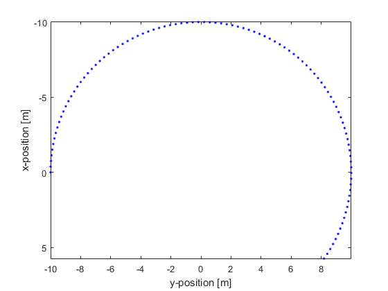

makeCartCircle
Create a 2D Cartesian circle or arc.
Syntax
circle = makeCartCircle(radius, num_points)
circle = makeCartCircle(radius, num_points, center_pos)
circle = makeCartCircle(radius, num_points, center_pos, arc_angle)
circle = makeCartCircle(radius, num_points, center_pos, arc_angle, plot_circle)
Description
makeCartCircle creates a 2 x num_points array of the Cartesian coordinates of points evenly distributed over a circle or arc (if arc_angle is given). The plot that is displayed after calling makeCartCircle(10, 100, [0,0], (215/180)*pi, true); is given below.

Inputs
radius |
circle radius [m] |
num_points |
number of points on the circle |
Optional Inputs
center_pos |
[x, y] position of the circle center [m] (default = [0, 0]) |
arc_angle |
arc angle for incomplete circle [radians] (default = 2*pi) |
plot_circle |
Boolean controlling whether the Cartesian points are plotted using plot (default = false) |
Outputs
circle |
2 x num_points array of Cartesian points |
Examples
See Also
cart2grid,
makeCartSphere,
makeCircle